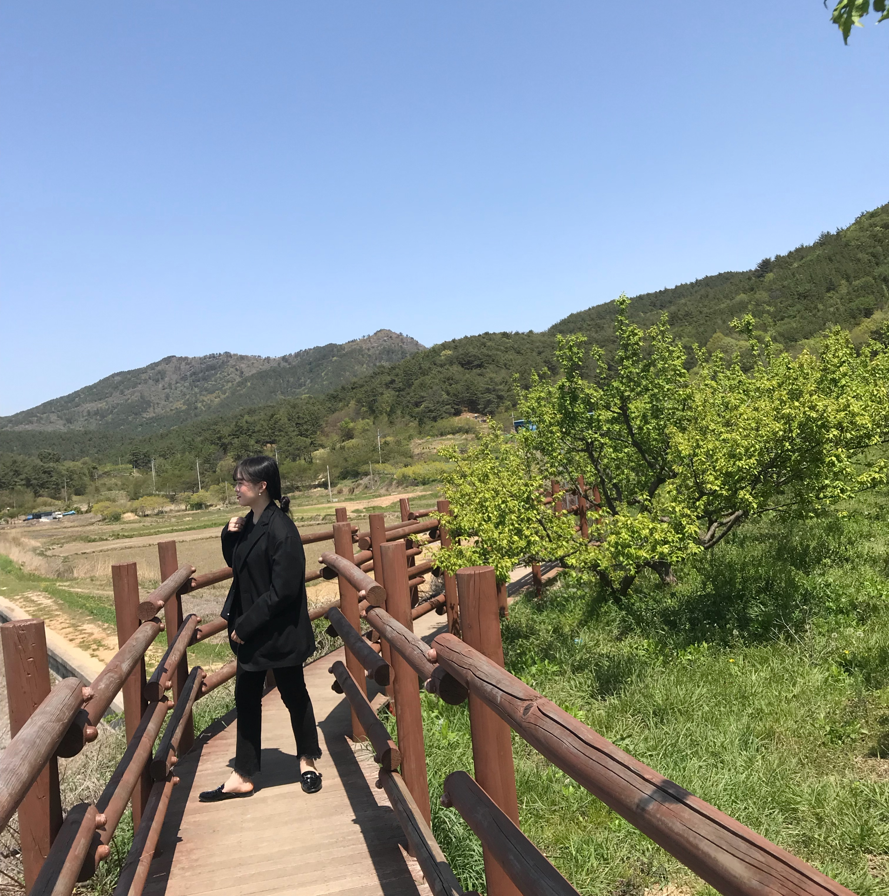

우리의 소중한 전라남도 순천으로 떠나버리자!
순천시(順天市)는 대한민국 전라남도 동부에 있는 시로, 전라남도청 동부청사가 있다.
1995년 승주군과 통합하여 도농복합시가 되었다.
시청 소재지는 장천동이고, 행정구역은 1읍 10면 13동이다. 동쪽으로 광양시, 서쪽으로 보성군, 화순군, 남쪽으로 여수시, 북쪽으로 곡성군, 구례군과 붙어 있다.
전라선과 경전선이 만나는 곳으로서 한국철도공사 전남 본부와 한국철도시설공단 호남본부가 소재한다.
시의 남쪽은 순천만에 접해 있고, 옛 승주군 지역은 자연 경관이 수려하고 문화 유산이 풍부한 관광지이다.
2013년 순천만국제정원박람회를 개최했고, 2010년에는 UN 선정 '살기좋은 도시'에서 은상을 수상했다.
-
온화하고 강수량이 많으며, 해양성 기후의 특징이 강하다.
| 순천의 날씨 |
평균 최고 기온 |
일 평균 최고 기온 |
평균 최저 기온 |
강수량 mm (인치) |
습도 % |
평균 강수 일수 |
| 10월 |
22.1 |
13.9 |
8.3 |
50.9 |
74.0 |
5.9 |

- 여분의 옷
- 세면도구 및 화장품
- 핸드폰 충전기
- 행복한 마음가짐♥
뭉치면 살고 흩어지면 죽는다.
박신희 인생 22년 가장 소중한 친구들의 고향 순천!
신희의 제 2의 고향 순천!
순천으로 떠나버리자~!!!
출처-https://ko.wikipedia.org/wiki/%EC%88%9C%EC%B2%9C%EC%8B%9C_(%EC%A0%84%EB%9D%BC%EB%82%A8%EB%8F%84)
위키백과 및 신이나는 신희의 마음 속!